June - July 2023
Dev Log 15
Project Update - June 2023
In June I had my 3rd go at building Air MK1, this time with the goal to fly it as soon as possible. I used my previous designs of Air MK1 as a jumping off point and then decided to simplify it, like a lot. Instead of using fiberglass tubes for the airframe and couplers, I switched to using 76.7mm diameter cardboard tube (fig1).
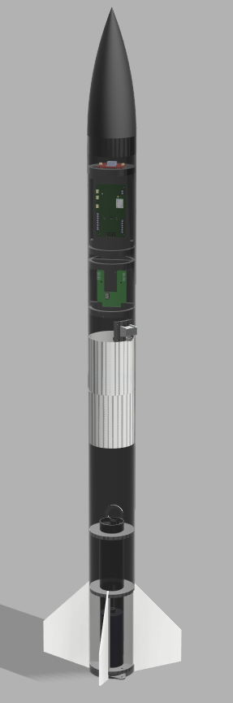
Air MK1 is now 1.1m tall and weighs 1.5kg. On the first flight I plan to have it fly to an altitude of 300m and it'll fly higher and faster after that. The goal with this vehicle is to test the software and telemetry capabilities of TFAC. The forward section of this vehicle is 45cm long and houses the avionics stack which has TFAC, LoRa radio, GPS, battery, Camera and the nosecone. The aft section holds the motor mount tube (38mm diameter) and thru-the-wall fins.
I also made some progress on actually building the vehicle. I designed and 3D printed a cutting jig for the RunCam (fig 2, fig 3), and also cut out the forward airframe to size (fig 4).
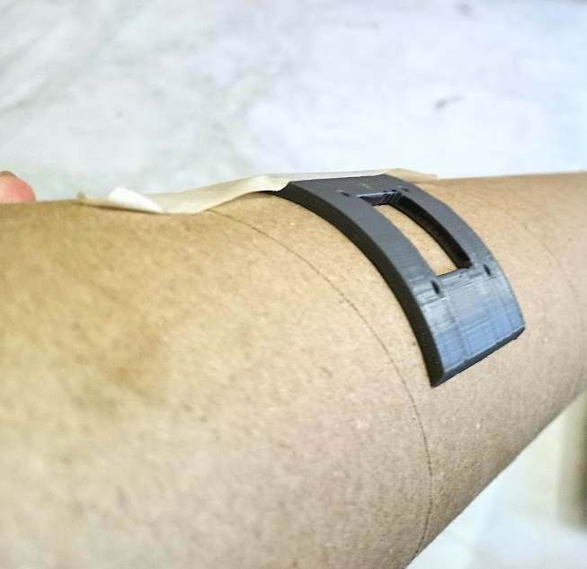
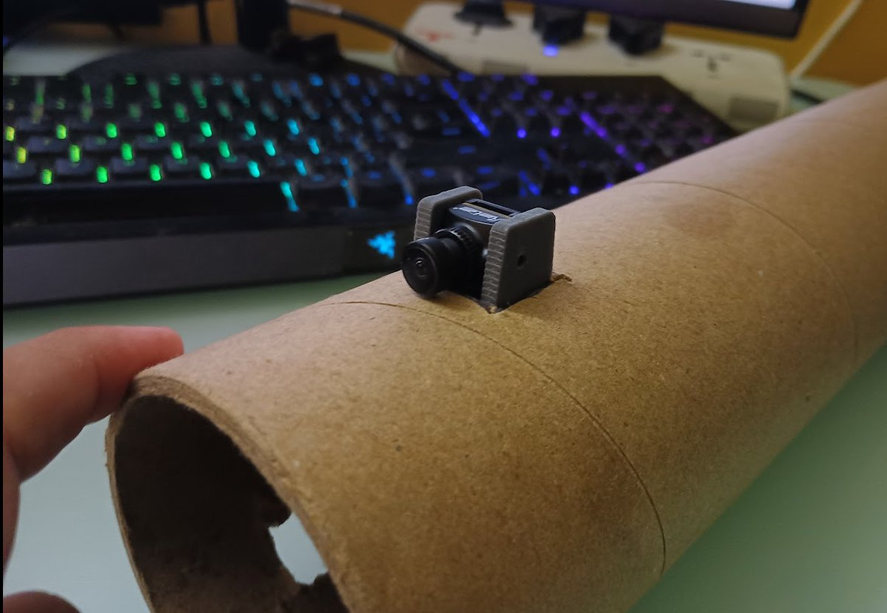
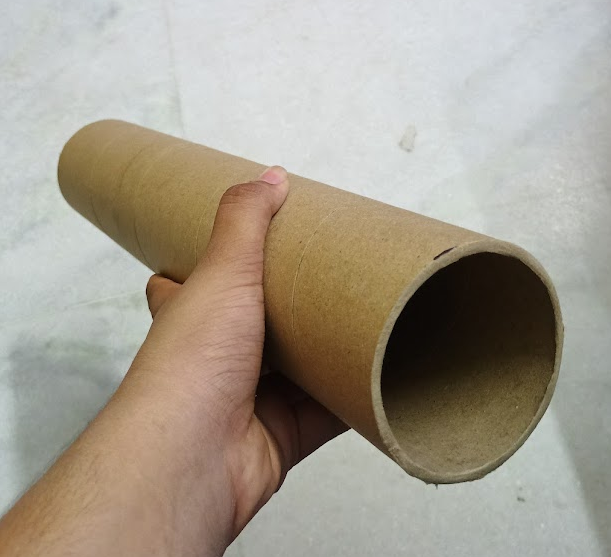
After this disaster struck. One fine evening while powering TFAC with a LiPo I made the magic smoke. A while before this I soldered together a XT-60 connector with a very weird color scheme: Black - Positive, White Negative (fig 5). Under the impression that I followed the common electronics convention of black wires corresponding to the negative terminal. I plugged to black wire (+11.1V) to the negative terminal of TFAC, and the white wire (GND) to the positive terminal of TFAC. Upon plugging in the battery I heard a loud pop and then a small cloud of smoke rise from the back of TFAC. Very unfortunate and probably one of the worst (and saddest) electronics moments I've ever had. I'd blown the buck converter and one of the load switches. (fig 6, 7)
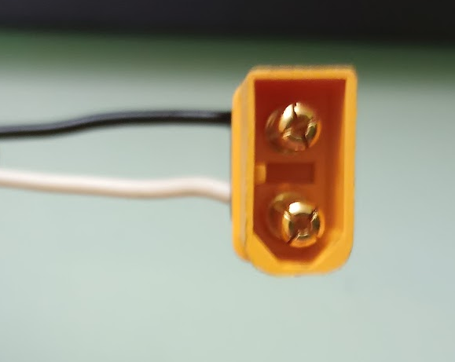
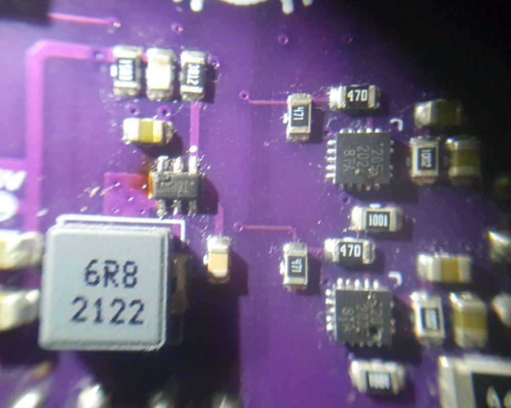
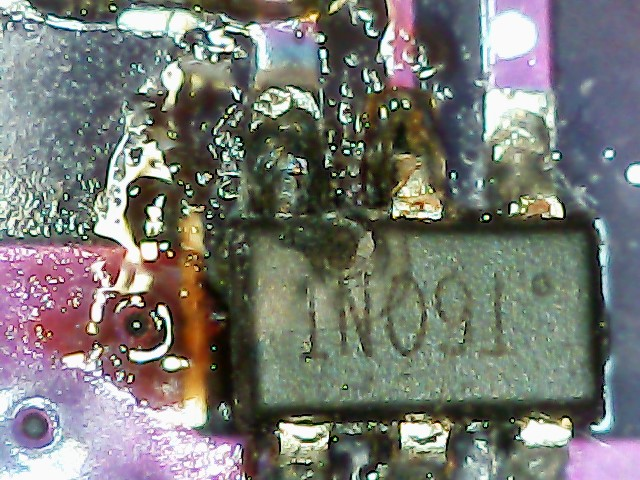
I had to put a hold on Air MK1's development and decided to make TFAC r2 (fig 8, 9). I cleaned up the layout and fixed the issues with the GNSS radio. Unfortunately I removed the flash chip pull up resistor (something I only realized once I had the PCBs in hand).
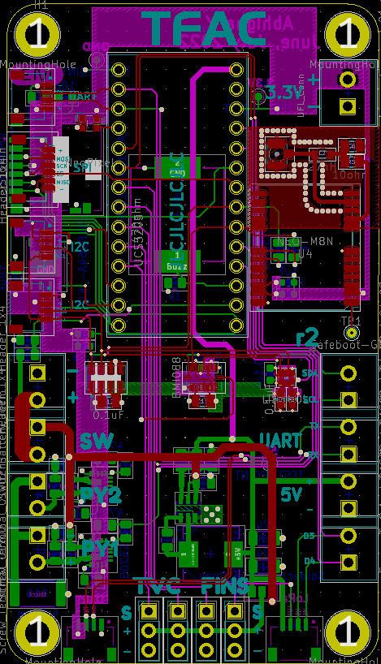
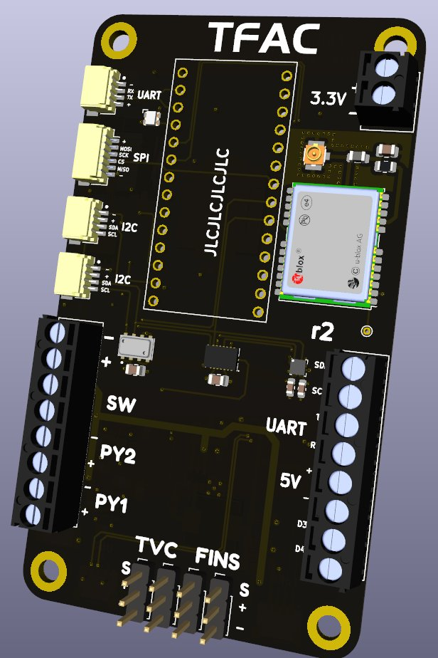
Project Update - July 2023
Not much progress was made this month. I got the TFAC r2 PCBs, assembled them, tried some stuff out to see if the flash chip was still salvageable (bodging a resistor up against the chip). None of these things worked and I fixed it up, and added a couple other things with TFAC r3, the new revision.
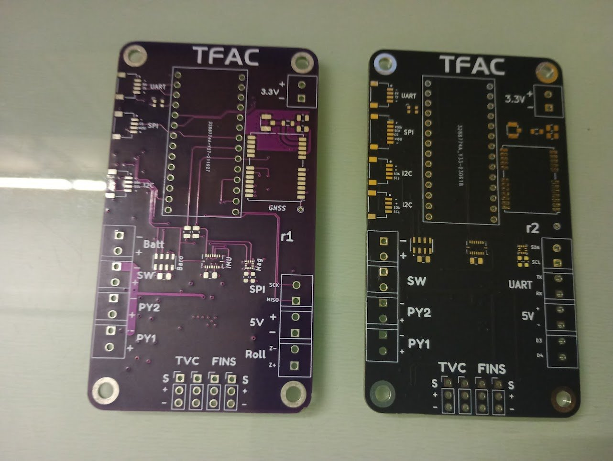
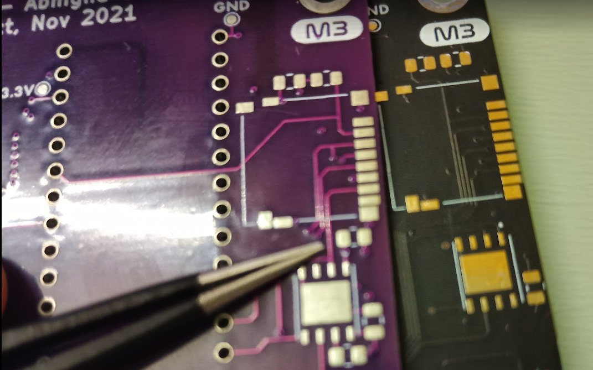
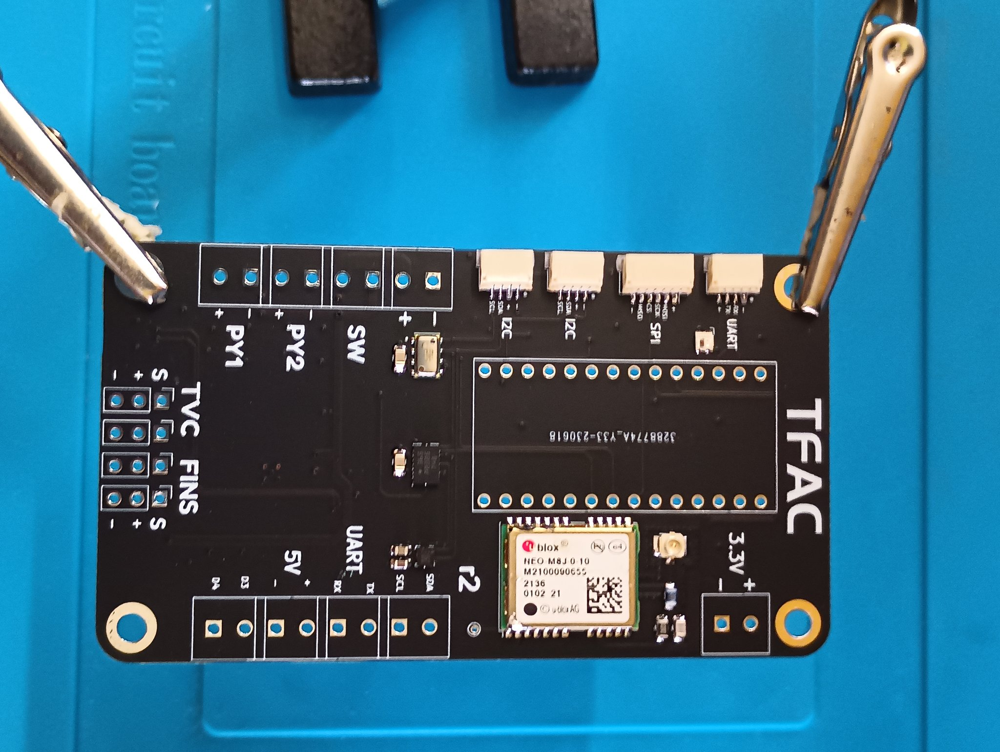